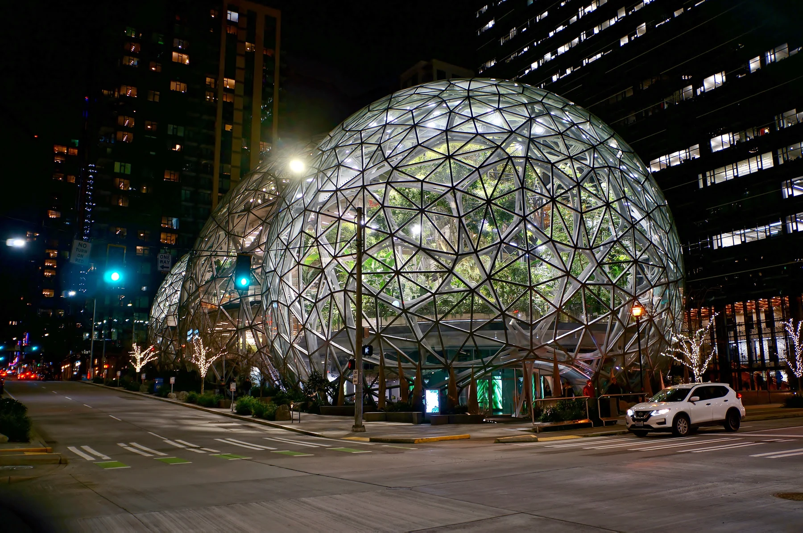
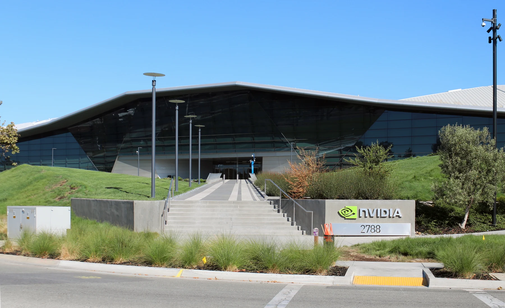
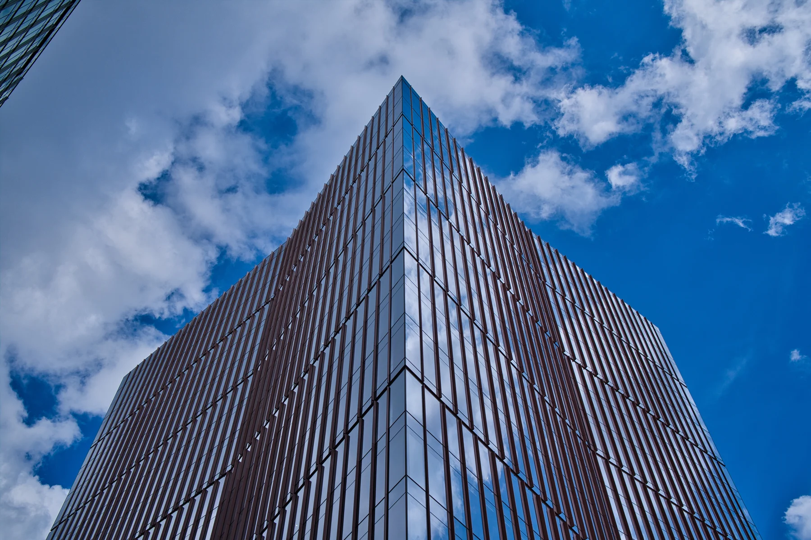
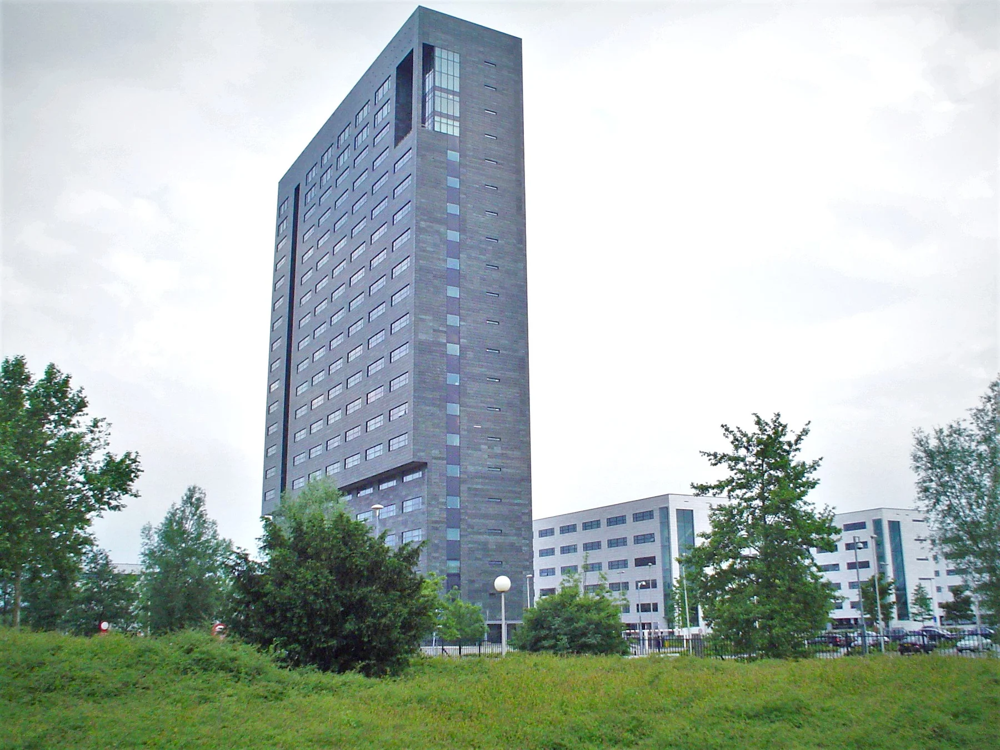
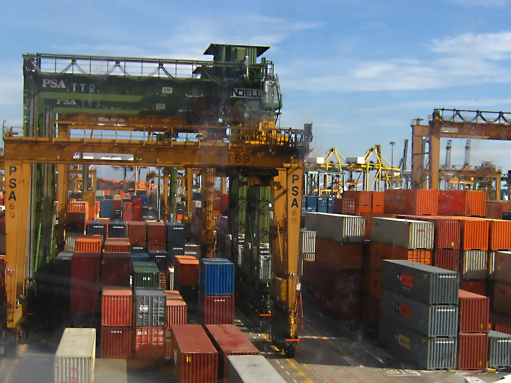
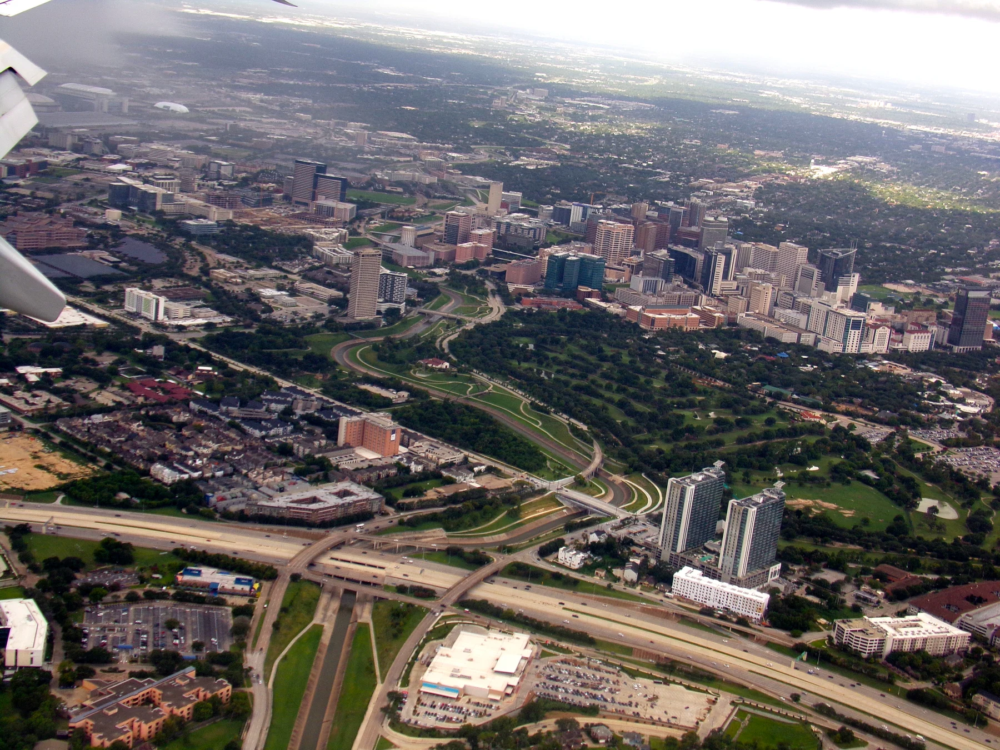
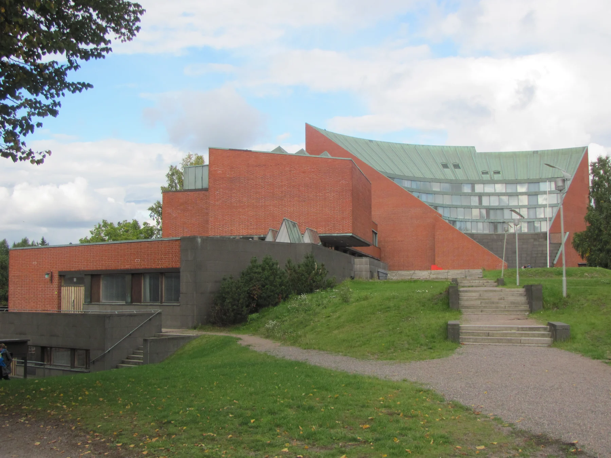
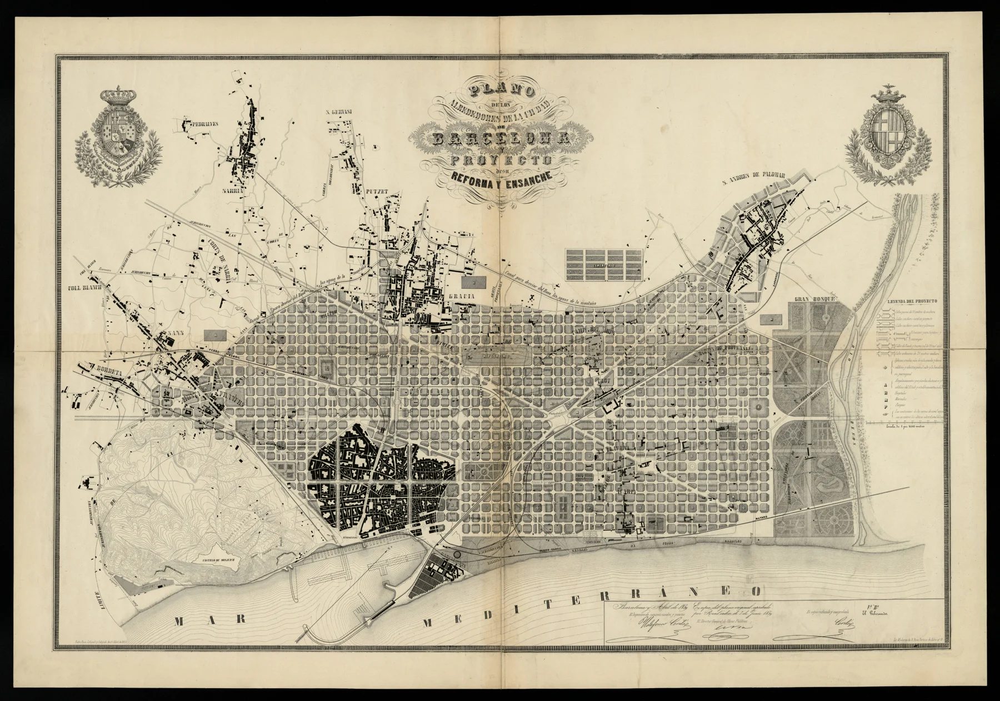
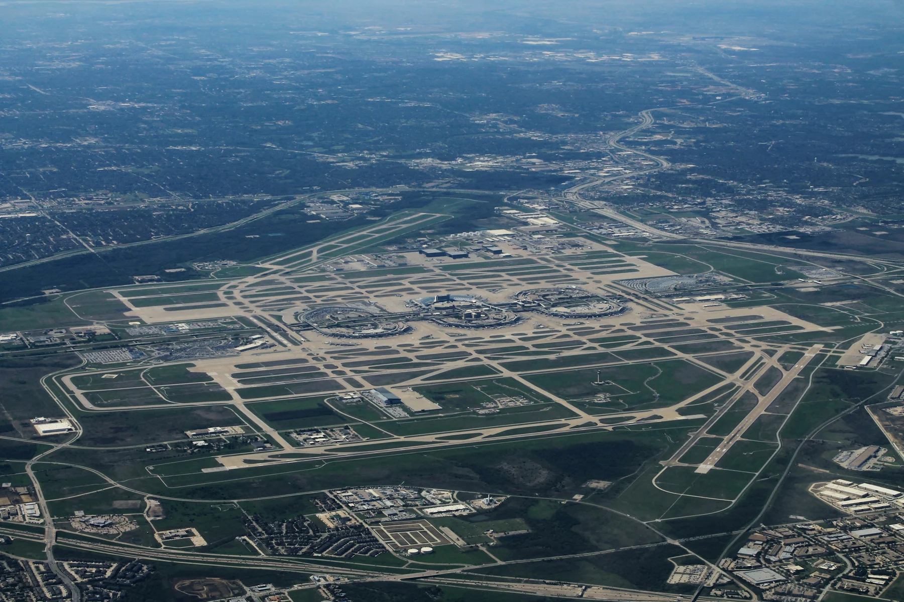

P02–07
福岡で、仕事と暮らしはどう変わった？
人口・雇用・報酬・保育・企業誘致
FUKUOKA × WORLD CITIES / 2026.10
福岡市と世界10都市。
成長の数字から、仕事と暮らしの手触りへ。
モビリティデザインラボの独自調査・提案
行政の公式見解や、確定した事業計画ではありません。
THE QUESTION BEHIND THE NUMBERS
今日の投資を、次の世代が挑戦できる仕事と、
自分らしく暮らせる場所につなぐ。
50年・100年は、長期のまちづくりを考える視点です。
予測値や、行政が定めた期限を示すものではありません。
01 / CHOOSE A QUESTION
全部を順番に読む必要はありません。
各章から、図版と根拠へ直接進めます。
02 / CITY ATLAS
何に投資し、誰が実行し、どんな仕事が育ったか。
成長と住民の暮らしを、同じ視野に置きます。

SEATTLE航空・ソフト・通販

SILICON VALLEY半導体・人材・発注

BOSTON研究・創薬・治療

EINDHOVEN半導体装置・共同研究

SINGAPORE工業団地・港・輸出
港・物流・自動化

HOUSTON石油化学・医療・研究

HELSINKI技術者・新興企業

BARCELONA都市整備・研究・制作

DALLAS / DFW共同空港・本社・物流
都市・都市圏・国では、統計の範囲と期間が異なります。この一覧は順位表ではありません。数値の定義・比較条件は、各ページの「出典・読み方」で確認できます。
03 / BRING IT BACK TO FUKUOKA
04 / EVIDENCE & DOWNLOADS
本文の条件と留保を残して、議論する。
出典は閲覧画面とPDFにも収録しています。
2012年12月21日策定。当初2013–2022年度、2023年2月に2024年度まで延長。
2024年12月19日策定、2025–2034年度。pp7–8、27–32、59–60。
2025年6月。2025–2028年度。pp66、73–74、78。
2001年策定、2014年・2026年改定。現行目標2034年度。総合計画やスタートアップ宣言とは別。
ONE FUKUOKA BLDG.新築工事。2025年3月31日現在、既支払額899.10億円、予定総額944.55億円。民間単独案件。
85棟竣工、2015年2月–2026年3月末。政策が追加的に生んだ棟数ではない。
p77。保育所等定員26,264人（2012年度）→42,000人（2024年度）。子育て満足度と待機児童。
当初目標と延長後目標を区別。pp1、4–6。
pp227、232、249。情報通信業54,119人（2021）、進出55社／雇用455人（2024年度）、就業機会満足50.3%。
就労資格外国人10,994人（2024）、外国人の生活環境63.4%。
行政市の2012→2022年度を比較。実質市内GDP、市民雇用者報酬。
2012→2022年10月の市民有業者・正規職員等。標本推計。
年度平均総合CPI。市民雇用者報酬平均の参考調整に使用。
住みやすい側97.4%。回答2,299人、回収率51.1%。主観評価。
2023年10月。居住中の専用住宅借家56,398円/月、0円含む、管理費・共益費別。単年水準、負担率・募集家賃ではない。
2010年17社823人、2025年38社2,693人。FTEや市民雇用者数とは別。
pp3–8。2003年からの企業共同活動、大学・市との連携。
宣言前の2006年418人→2011年846人。市webと年/年度・社/事業所の表記差あり。
pp27–30。民間企業設備投資2011→2022年度実質＋22.2%。研修・ソフトウェア等の個別内訳に転用不可。
pp35–38。人手不足と回答した657社の対応。中途採用57.5%、新卒採用24.7%、複数回答。
p47。2025年卒の市内大学理系の市内就職先比率21.9%。本人の希望・実勤務地・学位構成の分解不足。
PDF2枚目・印刷p2。進出時点の雇用人数をカウントすること、進出後の増員期待を事務局が説明。p5には採用難・管理職候補不足・受注辞退・仕様確認の手戻り等の現場証言。代表標本ではない。2026-10-11再オープン確認。
2026年3月9日。Model C訓練水上機50機の発注と生産拡張。国家の調達史であり、Seattle市の起業助成とは別。
1979年Bellevueへ移転、1981年IBM PCのOS供給、1986年Redmondへ。本社はSeattle市内ではなく広域の別市。3社は直接の派生系譜ではない。
Seattle地域の選定理由として技術人材の厚み、Oregon州Roseburgの大規模書籍倉庫への近さを説明。Amazonは1994年Bellevueで創業。
小売・ソフトウェア運用の経験とAWSの形成。AWS開始は2006年で、2010–2017年の本社支出より前。後年の支出からAWSが生まれたという因果経路は描いていない。
p.1。2003年Resolution 30610の狙いを確認。South Lake Unionをバイオおよびハイテクの研究・製造拠点に。市がAmazonを育てる統一計画だったとはしない。
2013年5月6日。将来の雇用・住宅を受け止める計画。将来目標の世帯・雇用数は実績として掲載していない。
Direct表と脚注1。2010年～2017年6月、Seattle本社の建物・インフラ37億ドル、従業員報酬257億ドル。会社自己報告。資金調達額でも世界全体の投資額でもない。報酬は設備投資と別。新築のみとは確認しておらず、合計を市のGDPや純増所得にしない。Spheresの写真は後年で、金額はこの施設単体ではない。
UW Seattle報告単位のR&D実支出17.34091億ドル、うち連邦11.88836億ドル。研究助成の獲得額とは別。全額がSeattle市内に着地した支出とはしない。見本本文では金額を省略。
印刷pp.56–57／PDF65–66枚目。SLU Streetcarは2007年完成、建設費5,640万ドル、沿線土地所有者LID負担2,620万ドル。交通のGDP・Amazon成長への因果効果の推計ではない。
共通2010→2023年。261,975.127→487,774.172 百万2017年連鎖ドル、＋86.2%。Seattle-Tacoma-Bellevue, WA (MSA)。公表版2024-12-04、2026-10-11原表再検算。都市圏全産業の実質付加価値。政策寄与率ではない。
共通2010→2023年。50,479.000→73,114.000 2017年連鎖ドル／人、＋44.8%。Seattle-Tacoma-Bellevue, WA (MSA)。公表版2025-03-05、2026-10-11原表再検算。地域物価差等を調整した平均個人所得。賃金中央値・住居費後所得ではない。
コンピュータ・数理職の平均時給73.93ドル、飲食関連23.10ドル。職種の分布や、住民が仕事に入れる条件も点検する参考。見本本文にこの賃金差の数値は掲載していない。 2024年の平均時給。職種の中央値ではない。
月額総家賃中央値2,030ドル。gross rentは賃料と借家人負担の光熱費等を含む。都市圏GDPとは地理・期間が違う。所得に占める負担率でも、新規募集家賃でもなく、Amazon単独による上昇効果ではない。 家賃中央値はACS 2020–2024、市域。
1994年7月25日採択。対象1994–2014年。印刷p104は高品質雇用・平均以上賃金の産業・経済多様化・技能・国際貿易。p110 E35–37は研究機関・病院・製造業の連携。p vii–ixは生活・社会的公正と都市拠点・交通・住宅。20年間の市内雇用目標に対する2014年実績は今回未照合。Boeing/Microsoftの前史をこの計画の成果にしない。2010–2023年の都市圏統計を計画達成率にしない。
p5。1994–2014は当初計画。2004年は2004–2024、2016年採択では2015–2035に主要改定。1994年の方針が2023年まで固定していたとはしない。
p17 Fig1.8。1995年初〜2014年末の住宅純増67,111戸、76%がUrban Centers / Urban Villages内。想定75%と住宅配置は概ね一致。目標5万〜6万は世帯、67,111は住戸なので達成率は算出しない。計画全体や住宅の手頃さ、高品質雇用の達成ではない。 p30 Fig1.13の雇用増配分は1995年3月〜2015年3月、都市中心部58%（想定65%）、ハブ7%（15%）。住宅とは分類が異なるため同じ拠点率として横比較しない。雇用保険対象職の純増と計画全雇用目標を割り算しない。
居住人口の年次推計、単位は千人。
顧客、反復購入、事業の成長についての当事者資料。
共通機能の構想とAWS成立の経緯。都市成長の因果推定ではない。
2011年11月採択、2040年の土地利用・都市構想。市の目標であり、1950年代のSilicon Valley形成を遡及説明しない。
PDF表示9〜11頁。1958年IBMのB-70航法計算機向け注文とFairchildの工程構築・出荷。直接の買い手はIBM。発注金額・数量は短文に不使用。 PDF9–11頁。初回注文数量は史料差があるため使わない。
1954年Honors Cooperative Program。HP、Sylvania、GE、Stanford Research Instituteが在職技術者の授業料を負担。
Butrica章、印刷153〜155、226〜227頁。1964年価格戦略変更、1966年Burroughsから民間コンピューター用ICの大口受注。1958→1966は節目の間隔であり全開発期間ではない。 産業形成史の機構。都市成長率の因果分解ではない。
FairchildからIntel、AMD等へ人材・企業が分岐。後年の都市圏成長の因果寄与率は示さない。
2024年Q4集合住宅平均家賃3,088ドル。対象Santa Clara・San Benitoの2郡、元データCoStar。全借家の中央値や所得に対する負担率ではない。
共通2010→2023年。58,412.000→109,075.000 2017年連鎖ドル／人、＋86.7%。San Jose-Sunnyvale-Santa Clara, CA (MSA)。公表版2025-03-05、2026-10-11原表再検算。地域物価差等を調整した平均個人所得。賃金中央値・住居費後所得ではない。
共通2010→2023年。171,825.658→392,455.628 百万2017年連鎖ドル、＋128.4%。San Jose-Sunnyvale-Santa Clara, CA (MSA)。公表版2024-12-04、2026-10-11原表再検算。都市圏全産業の実質付加価値。政策寄与率ではない。
都市圏人口。
最終版2017年7月、2030年までの13年構想。住宅負担・立ち退き抑制、機会へのアクセス、包摂的成長等。Cambridgeは別自治体。先行産業の成果をこの市計画へ帰属させない。
NIHの研究助成等を受給所在地別に集計。研究費の配分と地域内実支出、薬の購入、企業の資金調達は異なるため本文に配分額を載せない。
Genzymeのalglucerase／Ceredaseは1991年4月5日承認。承認自体を患者全員の改善や地域GDP増加の証拠にしない。
製造・Reimbursement節。Cerezyme原薬はBoston市Allston、仕上げはIrelandのWaterford。政府・民間保険等が支払者。2009年Allston製造中断もあり、承認後も品質・供給責任が必要。
2002年進出決定と科学人材への近接という理由。投資計画額は実支出完了と確認していないため不使用。
Cambridge研究施設は2004年完成、2005年報告で約1,100人、うち科学者・技術者800人超。移転等を含みうる拠点人員で、地域の純新規雇用ではない。
2007年に10年共同研究契約を発表。研究契約の総額は全額支出完了を確認していないため不使用。研究・企業移転・工業化の分担を示す。 2007年9月発表。大学から企業の工業開発へ移す経路。
2025年公表、6頁。借家世帯の24%が所得の50%超を家賃に支出、ACS 2019〜2023の5年推計。Boston市域で、都市圏成長の指標とは地理・期間が異なる。計画の純効果は今回推計していない。福岡向けlessonは提案。 印刷p.6。家賃負担はACS 2019–2023、B25074・B25095。
共通2010→2023年。371,428.587→515,386.134 百万2017年連鎖ドル、＋38.8%。Boston-Cambridge-Newton, MA-NH (MSA)。公表版2024-12-04、2026-10-11原表再検算。都市圏全産業の実質付加価値。政策寄与率ではない。
共通2010→2023年。60,233.000→75,192.000 2017年連鎖ドル／人、＋24.8%。Boston-Cambridge-Newton, MA-NH (MSA)。公表版2025-03-05、2026-10-11原表再検算。地域物価差等を調整した平均個人所得。賃金中央値・住居費後所得ではない。
MA・NHにまたがる都市圏。
2022年の医療・社会扶助収入32,335,280千ドル。
2011年の記事。大学の展開、企業人材需要、近接交流の説明。
1891年Philips、1984年ASML、1995年連携、2005年財団とNavigator 2006〜2013。2005→2013の8年は計画策定から対象期間末までで、産業成立期間や達成証明ではない。
Brainport Navigator 2006〜2013を地域経済構造強化のプログラムとして説明。計画全体の達成度は今回未評価。
3〜4頁。2024年Project Beethoven、2030年までの住宅・交通・技術人材条件整備。資金枠は実支出・完成住宅・目標達成ではない。国の技術人材施策は他地域にも及ぶ。
1984年4月1日、Philips・ASMIによる設立。PhilipsのPAS 2000露光技術を事業化。現在の中核拠点VeldhovenはEindhoven隣接自治体。 1984年PhilipsとASMIのJV。先行する技術蓄積。
PAS 5500初出荷は1991年5月9日、IBM Fishkill向け。1984年創業から7年。これは代表製品の節目であり、ASML最初の製品出荷や基礎研究開始年ではない。
注記28。Intel・TSMC・Samsungが2013〜17年分の共同R&D資金を2017年末までに全額拠出。ASML全体の契約で地域内支出額ではない。別の株式取得代金は既存株主へ還元され、R&D費へ足さない。
精密機構の設計、製造、組立、試験とPhilips Machinefabriekからの系譜。全世界従業員数を地域雇用へ置き換えない。
印刷136頁。VDLとの日常の設計課題・技術計画での協働。具体的な供給企業の仕事を裏づける。
Zuidoost-Brabantの2024年既存住宅平均取引価格492,630ユーロを49.3万へ丸めた。市域の値、所得比負担率、同品質住宅の価格指数ではない。福岡向けlessonは比較からの提案。 2024既存住宅の平均取引価格。
2014–2024職数変化、2024総数・HTSM。
顧客・供給能力・技術の接続。
補助機能の設計説明。
Background、Progress and developments、Revisions and subsequent plan。政府図書館の原資料に基づく歴史整理。1961-04-13承認、1965への延長、次期1966–70計画未実施を確認。
JurongでEDBからJTCへ1968年に役割移管。造成、移転、道路・電力・水、住宅・生活施設。本文中段。国家と工業地区。初期額S$178mはattracted investmentsのため今回金額主張に使わない
EDB1961年・高失業対策、1968年National Semiconductor、後続Fairchild/TI/HP。1960s節。公式掲載だが記事は当時の契約原本ではない。工場数・具体的補助額・全社同年進出は主張しない
1966年コンテナ港判断、1972年供用、1980年代世界貿易・船社需要、1996年大連進出。Heritage第5・6節。Singapore港とPSAの海外事業を区別。海外売上をSingapore付加価値に算入しない
45基・約$83m購入済み。PDF p.2、原文purchased。購入報告。機器メーカーと決済明細は不明。$270mの将来計画とは別
増設fab開所、US$4bn、公表施設23,000㎡、2022年設備搬入。冒頭・末尾。工場単位。1,000 jobs / additional 450,000 wafersはfuture表現。現金支出・補助額未確認
実質GDP+74.5%、2010→2025。製造等の2010→2023実質成長。国。2015連鎖価格。連鎖実質業種額を足して全体にしない 2015年連鎖価格、暦年。2026年4月更新。
人口5,076,732→6,111,175、+20.4%、2010→2025。6月末総人口、非居住者を含む。所得母集団とは別 6月末総人口。2026年9月更新。
フルタイム就業居住者実質所得中央値+23.2%、2015→2025。国民・永住者、CPF雇主等拠出・賞与月割り含む税引前。住宅費控除後でない 2015→2025累積実質変化23.2%。
印刷p.44 Our Global Manufacturing Footprint。2021-06-22増設発表、2023生産開始の当時見込み。EDBの長期開発融資・助成の関与も記載。現金支払額の検証には転用しない。
pp51–53、所得の対象と分布。
技能・生産性重視という政策目的。
2025年施策。長期成長の因果効果ではない。
PDF p.12、印刷p.11、section 2.3.3。2007-11-29採択。市全体の強い経済と魅力ある居住都市。2030まで。
2019-11-29、冒頭・Reason for revision。2011年Port Vision 2030を置換。市・国・州・当局・Deltalinqsの連携。市全体の都市計画とは別。
印刷p.9／PDF p.9、冒頭。改定後も2030年の時間軸を維持。Global HubとEurope’s Industrial Cluster、社会価値・外部不利益の低減。
2023総投資€295.4m、うち出資€28.6m、Amaliahaven岸壁€72.9m。印刷p.71。会社会計。工事の総事業費や都市GDPと別
1872 Nieuwe WaterwegとRuhr需要、戦間期の港湾工業化、Botlek1947、ECT1966、Maasvlakte2013。各歴史節。長期形成史。現在の市や港湾会社が当初から同じ権限だったとは扱わない
Shell Pernisは精製・化学製造、Europoortターミナルは原料の受入・保管・送出。Shells activiteiten節。工場と港地区。能力を実生産量・都市GVAにしない。未確定の創業年は使わない
MOLが出資するRWG2015-09-11開業、遠隔クレーン、自動化、バージ・鉄道接続。本文。施設。235万TEUは年間最大想定量で実貨物量ではない。本文に能力値は出していない
冒頭。港湾当局がPUMA（Boskalis／Van Oord）へ2008–2013第一期工事を発注。契約額を支出実績に転記しない。
2018-06-15、冒頭・Flexible design。2013年5月の港湾供用と、その後のターミナル設備整備を区別。
Rijnmond GDP実質+17.1%、2010→2023。CP2910。年率は0.1ポイント丸め。市域GDPでない Rijnmond CP2910。実質成長率を連鎖。
製造−3.1%、G–I+33.5%、M–N+36.7%、2010→2023。CP2910。G–Iを運輸単独と呼ばない 製造業とサービス群を分ける。
等価所得中央値€19,300→€29,700、2011→2023。GM0599、既知所得の民間世帯、2025年市区分。名目値 市域、2025年市区分で統一。既知所得の民間世帯。
全国CPI2011=93.73、2023=126.09をR8に適用→+14.3924%。全国物価。Rotterdam独自の生活費指数ではない 2011=93.73、2023=126.09。市独自の生活費指数ではない。
当局会計・貨物量・効率改善は地域GDPと別。
2015-09-30、冒頭とFY2017 annual work plan段落。初の総合計画。全市調整、住民サービス、成長への準備。単一の完成年はこの資料では明示されない。
Core Strategies、Vision Statement。機会、強靭性、賢明な公共投資、affordable city。先行する港湾・石油・医療の起源に遡及しない。
地元・連邦の費用分担、1911債$1.25m、1914浚渫完成・開通。Port Houston History節。地域の航路。債券額は実支出でなく調達。総決算額未確認
州病院設置、1943土地取得合意・住民投票、1945TMC非営利化、用途制約と自治、113acres超の土地供与/ほぼ無償賃貸。本文中段。134.36acres取得合意と113acres超供与実績は別。$19m基金は支出でも事業成果でもない。州$500kは歳出承認 1945年設立、寄贈地の用途制約、独立した病院等の集積。
8年の準備・設計・建設、1954年移転とfinal $9m price tagの段落。1946–54の8年、1941州承認から13年で新病院。最終費用$9mのうち財団約$2.5m、連邦・州が残りを分担と記す。
FY23 by the numbers：US$1.2bn spent on research。医療機関の年度支出、TMC全体ではない。2023暦年GDPと同じ時間単位にしない
Spindletop1901、精製所・戦時需要、主要企業、2016–23クラスター雇用とearnings。History、Chart6.2、Table6.1。現行Houston–Pasadena–The Woodlands MSA・10郡。BEA旧名称系列との境界一致未確認。雇用分類は独自クラスター 2016–2023クラスター雇用、Table 6.1の実質earnings、産業・気候リスク。
共通2010→2023年。397,507.092→550,795.536 百万2017年連鎖ドル、＋38.6%。Houston-The Woodlands-Sugar Land, TX (MSA)。公表版2024-12-04、2026-10-11原表再検算。都市圏全産業の実質付加価値。政策寄与率ではない。
共通2010→2023年。50,043.000→60,122.000 2017年連鎖ドル／人、＋20.1%。Houston-The Woodlands-Sugar Land, TX (MSA)。公表版2025-03-05、2026-10-11原表再検算。地域物価差等を調整した平均個人所得。賃金中央値・住居費後所得ではない。
1914年の深水港開通、戦時需要と産業形成。
PDF3–4頁。全市の都市像と民間雇用目標。2017–21は戦略期間で、人口増以上の雇用目標は長期。
2011年公表、PDF123頁。2008年R&D費用€5,968m。グループ世界全体で市内投資ではない。表紙の本社はEspoo。
本人がNokia・Microsoftの製品開発経験と2016年夏の創業を説明。正式なNokia分社やAalto発企業とはしない。
Helsinki本社、2016年設立。
2021-06-07。Gripen E/Fシミュレーターへの統合発表。全機導入完了や契約額を示すものではない。
2026年1月公表。2023年Helsinki所在の現役・旧startup群22,300人、R&D €345m。所得はPDF39–40頁、2022年個人リンクデータ。企業所在地は住居地・就業場所・創業地とは別。
2025-04-22。国内Nokia雇用は2008–14年に純減16,520人。新企業増を喪失回復・都市全体の繁栄と同一視しない。 2025年。全国の企業・人材の観測で、Helsinki市成長への純効果ではない。
登録統計による2005→2023年比較。市所在企業群で、都市全産業ではない。
2021–25の過去施策。2026年の現行制度としない。
原図CAT-AHCB-AHCB4-202-10055。衛生、住宅、移動と社会性を目指す計画。中央政府承認で、市の民主的合意計画とは異なる。
Jorge Ribalta、2009年、印刷45–46頁。1979年民主市政回復、Serra/Maragall市政、公共空間再生と1992年五輪。
PDF7–8枚目/印刷13–15頁のMaragall・Raventós序文、PDF25枚目/印刷48–49頁の総合目標。原本画像照合済み。
1987年Maragall提案、1988年着手、1990年承認。市から都市圏・広域圏へ後年拡大。
1996-10-17公刊、印刷26–28、43–49、62–63頁。国・市とHOLSA/VOSA/IMPUSA、海岸・下水・鉄道・環状道路の工事と資金を検査。大会運営と都市工事は別。
印刷107、111–112、116頁。22@計画2000年承認、2009年末道路等12.7km超改修、会社当年投資12,978千ユーロ。地区総額としない。
2009-01-07学術活動開始。UPF、市、MediaproのBarcelona Media Park。大学移転を純増雇用としない。
2026-07-20「GRUP MEDIAPRO successfully co-produces the FIFA World Cup 2026 for DAZN Spain」。Barcelona拠点からDAZN Mundialを共同制作、88生番組。国内外100名超の体制で、全員を市内新規雇用とはしない。URLは記事一覧。
印刷15頁/PDF17枚目、1990–2013表。ホテル宿泊1990=3,795,522、2000=7,777,580。市内ホテルで、都市圏全宿泊ではない。
印刷37頁ICT就業33,396→90,418。68–69頁実質家計可処分所得総額約7%増、2019Q1→2024Q4、季節調整済み。個人・世帯当たりではない。 印刷p37。ICT就業・契約。図見出しの期間誤記は本文・軸で確認。
Garcia-López et al.、Journal of Urban Economics 119、2020、DOI 10.1016/j.jue.2020.103278。2007–17年募集家賃を含む分析。平均的地区の推計1.9%、Airbnb活動が多い上位1割の地区7%。
p89・p93。実質1人GDPと複数産業の戦略。
2025年12月公表。居住者の平均給与。
2024年9月18日。訓練・就職支援の仕組み。
Goals for Dallas–1965節。Jonsson主導、民間発案・市議会支持。交通、教育、経済等の目標と、未達・一部地区の軽視に対する批判。
初回会議1966年6月、目標集1966年9月公刊。1965年着手と1966年の市民討議を分ける。
1965年共同計画、1968年12月着工、1974年1月13日開港。両市共同事業。市境外のEuless・Irving・Grapevine近辺。
印刷p49／PDF p53、DFWの建設費$700m、連邦負担$60mの表。回顧的公的資料、当時名目。
DFW1974年開港、1979年本社を地域へ移転、1981年ハブ化。空港完成と民間の路線運営判断の間に7年。
1930年GSI、1940年代に信号処理を潜水艦探知・レーダーへ、1946年研究・製造部門、1958年IC。広域空港より前に電子産業が存在。
2016年1月市広報p1。MCIが1972年に供給者Collins Radioへの近接を理由にRichardsonへ。1989年までにNortel・Ericsson・Fujitsu。
2014年One Toyota発表→2017年開所、建設・移転に約$1bn投資したと報告。品質技術・販売・マーケティング・金融・本社機能を統合。
共通2010→2023年。377,056.747→613,381.002 百万2017年連鎖ドル、＋62.7%。Dallas-Fort Worth-Arlington, TX (MSA)。公表版2024-12-04、2026-10-11原表再検算。都市圏全産業の実質付加価値。政策寄与率ではない。
共通2010→2023年。45,512.000→59,711.000 2017年連鎖ドル／人、＋31.2%。Dallas-Fort Worth-Arlington, TX (MSA)。公表版2025-03-05、2026-10-11原表再検算。地域物価差等を調整した平均個人所得。賃金中央値・住居費後所得ではない。
2010=2914.2、2023=4200.6千人。2026-04更新、年平均非季調、事業所雇用。住民就業者数ではない。
印刷p93：36.6%の世帯が所得30%超を住宅費に支出。市計画の記述で、基礎統計観測年はこの段落に明示なし。2023年単年のACS値とは表記しない。
Economic Development Policyは2025-12-10、Incentive Policyは2026-01-28改定。2021年採択・2023年改定という歴史と現行を区別。
Dallas市2026年公表。新アリーナ構想の土地取得オプション。購入完了・完成ではない。
Plano市 Willow Bend District事業説明。Stars新構想。2026年11月3日の会場関連税投票を予定。市議会最終承認と最終契約は別。
2026年6月8日LOI。市負担等は費用・最終議会承認・確定契約を条件とする。計画・未完成。
Sports Arena TIF FY24–25、印刷p11＝PDF11枚目、基準2025-09-30。全3地区の完成住宅5,458戸。アリーナ単体の因果効果ではない。
実証費は事業者負担、最優秀者の優先交渉、契約は予算内。実証成功と継続受注は別。
pp5–6。売上・成長率・投資金額・従業員等の調査を年2回程度要求。未実施とは断定しない。
印刷pp40–41。2019年理系18.8%、2020年21.6%。対象校変動あり。
2022–2024年の理系市内就職先構成比22.6、22.9、22.8%。学部別は未調査と説明。
p3。2021年法人番号情報による捕捉拡大。原図再検証済み。
2026-04-01更新。研究開発・ソフトウェア・設計・本社・半導体関連など。
事業公式案内。20社程度、最大5回。顧客管理・見積・受注等の見直しと売上拡大。募集は実施・成功の証明ではない。
2026-09-30更新。制度内容の確認。追加効果は未判定。
事業化検証資金・プレCXO・メンタリングの仕組み。全件成果の証明ではない。
第9次原計画、当初期限、延長後目標、最新実測の区別を原典で確認。
第9次原計画、当初期限、延長後目標、最新実測の区別を原典で確認。
第9次原計画、当初期限、延長後目標、最新実測の区別を原典で確認。
第9次原計画、当初期限、延長後目標、最新実測の区別を原典で確認。
第9次原計画、当初期限、延長後目標、最新実測の区別を原典で確認。
第9次原計画、当初期限、延長後目標、最新実測の区別を原典で確認。
第9次原計画、当初期限、延長後目標、最新実測の区別を原典で確認。
第9次原計画、当初期限、延長後目標、最新実測の区別を原典で確認。
第9次原計画、当初期限、延長後目標、最新実測の区別を原典で確認。
第9次原計画、当初期限、延長後目標、最新実測の区別を原典で確認。
第9次原計画、当初期限、延長後目標、最新実測の区別を原典で確認。
第9次原計画、当初期限、延長後目標、最新実測の区別を原典で確認。
第9次原計画、当初期限、延長後目標、最新実測の区別を原典で確認。
2025-11-20更新。2026-10-11現在2022年度が市公式の最新掲載。異なる基準間は比較不可。
2026-08-04時点、福岡市2023年度値は2026年11月中旬予定。県の2023年度公表を市へ置換しない。
A00155 年度平均 row24。2020年=100。
最新調査2022年。5年ごと。2023/24/25年の同調査値を捏造しない。
2026-10-11確認。10月1日人口2012 1,494,603、2025 1,662,793、2026 1,671,323。2025は国勢調査、他年推計人口。
印刷p41/PDF42が2019卒。原図は既存調査保存。
FGNについて。2023-03末までの新規雇用1262。雇用の開始時点・退職控除・地理は未確定。
2012/9宣言、2014/5特区、2014/10カフェ、2017/4FGN。2025/12時点カフェ経由創業1400社超。
印刷pp1–3。雇用保険適用事業所に基づく福岡地区2006–14年度。
印刷p14/PDF17、図17。2024年度開業率4.9%、全国3.8%。
雇用保険適用事業所。職安管轄集計で行政市域に一致しない。
コラム3-2。全国の建設業2012–17加入促進、コロナ期加入等。福岡固有の影響量は未推定。
plan-verified.json retains exact indicator locators
plan-verified.json retains exact indicator locators
plan-verified.json retains exact indicator locators
plan-verified.json retains exact indicator locators
plan-verified.json retains exact indicator locators
plan-verified.json retains exact indicator locators
plan-verified.json retains exact indicator locators
plan-verified.json retains exact indicator locators
plan-verified.json retains exact indicator locators
2026-09-18公表。A00155 年度平均AZ24=83.5、BJ24=91.5。原Excelを独立監査後、本担当も再読。
印刷p96/PDF4。新設事業所数790/年(2009)→850/年(2021)。原図確認。
印刷p222/PDF19でICT54,119人の観測年2021を確認。創業節pp218–221にはカフェ1467の記載を確認できず。
同一公表版2015暦年連鎖価格。原表実数C=2012、M=2022。独立分析・監査者が表頭と元セルを確認。
p11/34/61/62。Docomo系列、天神115.6ha。平日指数と休日年齢構成は別。
p1/12。天神・大名・今泉1・2丁目の1F募集賃料、面積加重平均。物件構成は変動。
2026-01-29公表。2027年2月末営業終了予定。次期施設は計画。
六本松1丁目、住宅地図・現地調査・9店聞取り。物件条件・改修・仲介関係。天神の因果効果ではない。
2023年休日10日のGPS。人数とRA率の分布は異なる。無料利用や快適性、再開発効果の指標ではない。
地方小都市の115地区等を調査。福岡は対象外。所有・建物構成と更新可能性に関する設計上の示唆。
2015-04-10。シアトル訪問が創業支援の着想となった本人発言。市全体の唯一の公式目標都市とは別。
2026-10-01公表、印刷p55/PDF61。全回答941社。複数回答。2024年の人手不足657社とは分母が異なる。
第9次原計画、当初期限、延長後目標、最新実測の区別を原典で確認。
2026-05-29公表、2026-04-01時点。p1定義・2026値、p2 2021–26同一表。市Webは2012利用定員26,264との比較も掲載。
1,662,793人、2025-10-01。福岡市行政区域の国勢調査人口。
784,777人、2025-07-01。Seattle市行政区域の居住人口推計、Census Vintage 2025。
4,161,883人、2025-07-01、Seattle–Tacoma–Bellevue, WA MSA。規模を示す参考値。旧版BEA経済統計の人口分母へ差し替えない。
989,814人、2025-07-01。San Jose市行政区域の居住人口推計、Census Vintage 2025。Silicon Valley全域の人口ではない。
1,984,473人、2025-07-01、San Jose–Sunnyvale–Santa Clara, CA MSA。規模を示す参考値。旧版BEA経済統計の人口分母へ差し替えない。
672,973人、2025-07-01。Boston市行政区域の居住人口推計、Census Vintage 2025。Cambridge市を含まない。
5,034,221人、2025-07-01、Boston–Cambridge–Newton, MA–NH MSA。規模を示す参考値。旧版BEA経済統計の人口分母へ差し替えない。
249,035人、2025-01-01。Eindhoven基礎自治体（GM0772）の登録人口。CBS表37259ned、男女計、2025年1月1日、確定値。
816,291人、2025-01-01、Zuidoost-Noord-Brabant (COROP region)。Brainport/Eindhoven市の人口と置換しない。
6,111,175人、2025-06-30。都市国家Singaporeの6月末総人口。国民・永住者と非居住者を含む。
672,960人、2025-01-01。Rotterdam基礎自治体（GM0599）の登録人口。CBS表37259ned、男女計、2025年1月1日、確定値。
2,397,315人、2025-07-01。Houston市行政区域の居住人口推計、Census Vintage 2025。
694,392人、2025-12-31。Helsinki市行政区域の2025年末人口。市Research and Statistics公表。
1,713,247人、2025-01-01。Barcelona自治体（080193）の人口。INE年次人口センサスに基づくIdescat、2025年1月1日。
1,329,491人、2025-07-01。Dallas市行政区域の居住人口推計、Census Vintage 2025。
8,477,157人、2025-07-01、Dallas–Fort Worth–Arlington, TX MSA。規模を示す参考値。旧版BEA経済統計の人口分母へ差し替えない。
Photo by Nichika Sakurai / Unsplash / Unsplash License · Unsplash License
表示用に縮小・WebP変換。画面比率で表示トリミング。内容の追加・削除なし。
Amazon Spheres at night from 7th and Lenora — SounderBruce / Wikimedia Commons / CC BY-SA 4.0 · CC BY-SA 4.0
表示用に縮小・WebP変換。画面比率で表示トリミング。内容の追加・削除なし。
Courtesy of the Seattle Municipal Archives, Item 203551 / CC BY 2.0 · CC BY 2.0
表示用に縮小・WebP変換。画面比率で表示トリミング。内容の追加・削除なし。
NVIDIA Headquarters.jpg — Coolcaesar / Wikimedia Commons / CC BY-SA 4.0 · CC BY-SA 4.0
表示用に縮小・WebP変換。画面比率で表示トリミング。内容の追加・削除なし。
Photo by Karthik Vadlamani / Unsplash / Unsplash License · Unsplash License
表示用に縮小・WebP変換。画面比率で表示トリミング。内容の追加・削除なし。
Site 5, MIT Kendall Square.jpg — Chris Rycroft / Wikimedia Commons / CC BY 2.0 · CC BY 2.0
表示用に縮小・WebP変換。画面比率で表示トリミング。内容の追加・削除なし。
Kendall Square neighborhood, Cambridge, Massachusetts.jpg — Kenneth C. Zirkel / Wikimedia Commons / CC BY 4.0 · CC BY 4.0
表示用に縮小・WebP変換。画面比率で表示トリミング。内容の追加・削除なし。
ASML headquarters Veldhoven.jpg — A ansems / Wikimedia Commons / Public domain · Public domain
表示用に縮小・WebP変換。画面比率で表示トリミング。内容の追加・削除なし。
The-Strip 9.jpg — high tech campus / Wikimedia Commons / CC BY-SA 4.0 · CC BY-SA 4.0
表示用に縮小・WebP変換。画面比率で表示トリミング。内容の追加・削除なし。
Port of Singapore Keppel Terminal — Calvin Teo; 2020 edit by Liandrei / Wikimedia Commons / CC BY-SA 2.5 · CC BY-SA 2.5
表示用に縮小・WebP変換。画面比率で表示トリミング。内容の追加・削除なし。
Photo by Ethan Hu (@ethanhjy) / Unsplash / Unsplash License · Unsplash License
表示用に縮小・WebP変換。画面比率で表示トリミング。内容の追加・削除なし。
APM terminal - Prinses Amaliahaven - Maasvlakte 2 - Port of Rotterdam (23586020385) — Frans Berkelaar / Wikimedia Commons / CC BY-SA 2.0 · CC BY-SA 2.0
表示用に縮小・WebP変換。画面比率で表示トリミング。内容の追加・削除なし。
Markthal Rotterdam1 — Jorge Franganillo / Wikimedia Commons / CC BY 4.0 · CC BY 4.0
表示用に縮小・WebP変換。画面比率で表示トリミング。内容の追加・削除なし。
Arial View Of Texas Medical Center In Houston Texas 08202022 1 — RobertKixmiller / Wikimedia Commons / CC BY-SA 4.0 · CC BY-SA 4.0
表示用に縮小・WebP変換。画面比率で表示トリミング。内容の追加・削除なし。
Discovery Green in Houston — Ed Schipul / Tendenci / Wikimedia Commons / CC BY 2.0 · CC BY 2.0
表示用に縮小・WebP変換。画面比率で表示トリミング。内容の追加・削除なし。
Otaniemi,Espoo, Aalto University — Ranerana / Wikimedia Commons / CC BY-SA 4.0 · CC BY-SA 4.0
表示用に縮小・WebP変換。画面比率で表示トリミング。内容の追加・削除なし。
People sitting on chair inside building — Hayffield L / Unsplash / Unsplash License · Unsplash License
表示用に縮小・WebP変換。画面比率で表示トリミング。内容の追加・削除なし。
PlaCerda1859b.jpg — Ildefons Cerdà i Sunyer / Wikimedia Commons / Public domain (PD-Art / PD-old-100) · Public domain (PD-Art / PD-old-100)
表示用に縮小・WebP変換。図全体を表示、トリミングなし。
Superilla del barri de Sant Antoni, Barcelona 3 — Cataleirxs / Wikimedia Commons / CC BY-SA 4.0 · CC BY-SA 4.0
表示用に縮小・WebP変換。画面比率で表示トリミング。内容の追加・削除なし。
Dallas-Fort Worth International Airport Aerial (50430797863).jpg — formulanone / Wikimedia Commons / CC BY-SA 2.0 · CC BY-SA 2.0
表示用に縮小・WebP変換。画面比率による表示トリミング。内容の追加・削除なし。
Klyde Warren Park.jpg — John P Salvatore / Wikimedia Commons / CC0 1.0 · CC0 1.0
表示用に縮小・WebP変換。画面比率による表示トリミング。内容の追加・削除なし。
各写真は、元の利用条件に従って掲載しています。画像の権利は各権利者に帰属します。キャラクターは既存のRAMEN TECH資料に用いたGarraway F編集版（非公式）。元のSVGを未改変で使用しています。
公開日：2026年10月11日。収録値は出典ごとの基準年に基づきます。最新人口を別年の経済指標の分母へ置き換えていません。政策・施設と都市の変化を並べることは、因果効果の証明を意味しません。引用・共有する際は、対象地域・期間・出典・留保をあわせてご確認ください。